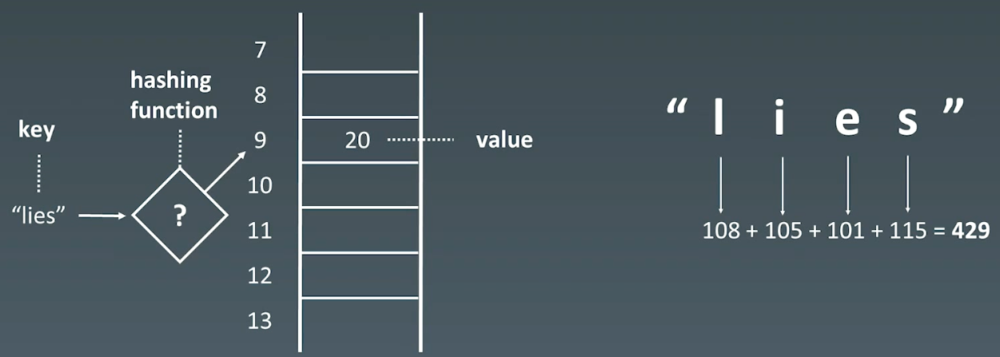
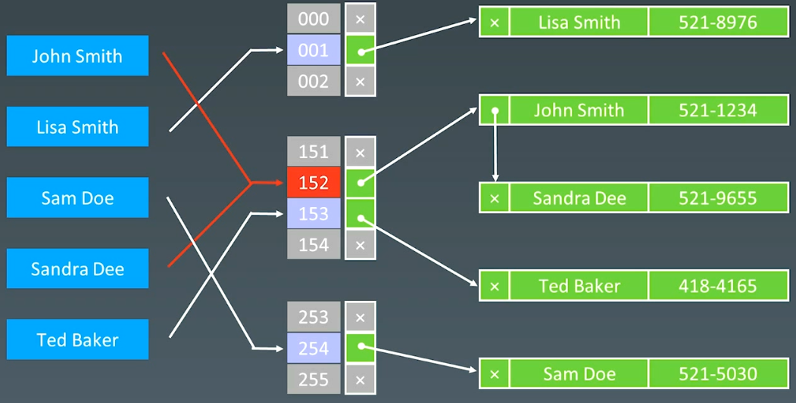

05 哈希表、映射、集合
|Word count:799|Reading time:3min|Post View:
1.基本特性
1.1 Hash Table
哈希表（Hash table），也叫散列表，是根据关键码值（Key value）而直接进行访问的数据结构。它通过把关键码值映射到一个位置来访问记录，以加快查找的速度。这个映射函数叫做散列函数（Hash Function），存放记录的数组叫做哈希表（或散列表）。
hash函数

hash冲突

2.示例
2.1 有效字母异位词
242. 有效的字母异位词 - 力扣（LeetCode）
1
2
3
| 给定两个字符串 s 和 t ，编写一个函数来判断 t 是否是 s 的字母异位词。
注意：若 s 和 t 中每个字符出现的次数都相同，则称 s 和 t 互为字母异位词。
|
1
2
3
4
5
6
7
8
9
10
11
12
13
14
15
16
17
18
19
20
21
22
23
24
25
26
27
28
29
30
31
32
33
34
|
class Solution {
public:
bool isAnagram1(string s, string t) {
std::sort(s.begin(), s.end());
std::sort(t.begin(), t.end());
return s == t;
}
bool isAnagram(string s, string t) {
if (s.size() != t.size()) {
return false;
}
std::vector<int> counter(26, 0);
for(int i = 0; i < s.size(); i++) {
counter[s[i] - 'a']++;
counter[t[i] - 'a']--;
}
for (auto count : counter) {
if (count != 0) {
return false;
}
}
return true;
}
};
|
2.2 字母异位词分组
49. 字母异位词分组 - 力扣（LeetCode）
1
2
3
| 给你一个字符串数组，请你将 字母异位词 组合在一起。可以按任意顺序返回结果列表。
字母异位词 是由重新排列源单词的所有字母得到的一个新单词。
|
1
2
3
4
5
6
7
8
9
10
11
12
13
14
15
16
17
18
19
20
21
22
23
24
25
26
27
28
29
30
31
32
33
34
35
36
37
38
39
40
41
42
43
44
45
46
47
48
49
50
51
52
53
|
class Solution {
public:
vector<vector<string>> groupAnagrams(vector<string>& strs) {
std::unordered_map<std::string, std::vector<std::string>> map;
for (auto& str : strs) {
std::string key = str;
std::sort(key.begin(), key.end());
map[key].emplace_back(str);
}
std::vector<std::vector<std::string>> ans;
for (auto it = map.begin(); it != map.end(); it++) {
ans.emplace_back(it->second);
}
return ans;
}
vector<vector<string>> groupAnagrams2(vector<string>& strs) {
auto array_hash = [fn = hash<int>{}](const std::array<int, 26>& arr) -> size_t {
return std::accumulate(arr.begin(), arr.end(), 0u, [&](size_t acc, int num) {
return (acc << 1) ^ fn(num);
});
};
std::unordered_map<std::array<int ,26>, std::vector<std::string>, decltype(array_hash)> map(0, array_hash);
for (std::string& str : strs) {
std::array<int ,26> counts{};
int length = str.length();
for (int i = 0; i < length; i++) {
counts[str[i] - 'a']++;
}
map[counts].emplace_back(str);
}
std::vector<std::vector<std::string>> ans;
for (auto it = map.begin(); it != map.end(); it++) {
ans.emplace_back(it->second);
}
return ans;
}
};
|